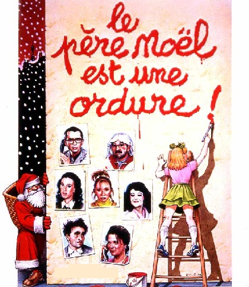

Le Père Noël et la petite fille
Father Christmas and the little girl
Georges Brassens (1960)
|
|
NOTES
|
[1] "Sugar daddy" (Papa gâteau): Brassens avait-il prévu l'exploitation commerciale de l'affligeante réalité qu'il dénonce? [2] Il y a un double-sens dans l'expression "avoir du pain sur la planche" (avoir de quoi se nourrir / avoir beaucoup à faire) [3] "Hanches" n'est pas seulement un euphémisme. Ce geste signifie la prise de possession. [4] "Landau" signifie à la fois "carrosse" et "voiture d'enfant" [5] "Emaux et camées" est un recueil de 37 poèmes publiés en 1852 par Théophile Gauthier. [6] "Temps" est pris ici dans deux sens: "le temps qu'il fait" et "le temps qui passe". [7] Le passage de "il" à "on" exprime le fait que le premier protecteur sera certainement suivi de beaucoup d'autres. |
[1] "Sugar daddy": Brassens was ahead of his time! [2] There is a pun with the expression "avoir du pain sur la planche" (be facing a consequent amount of work) [3] "Hips" is not a mere euphemism. This gesture means "taking possession of the person concerned". [4] "Landau" means both "carriage" and "pram" [5] "Enamels and Cameos" (Emaux et camées) is a collection of 37 poems published in 1852 by Théophile Gauthier. [6] "Temps" can mean both "weather" and "time". [7] "He" is replaced here by "they" to mark that this "sugar daddy" will be certainly only the first in a long row of "protectors". |
|
 Brassens chante "Le père Noël et la petite fille" |